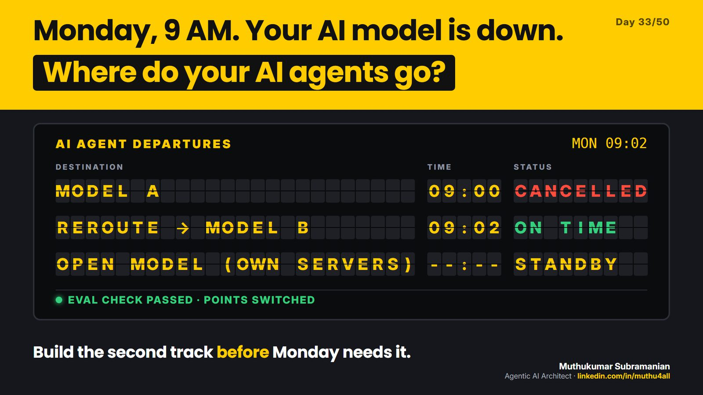
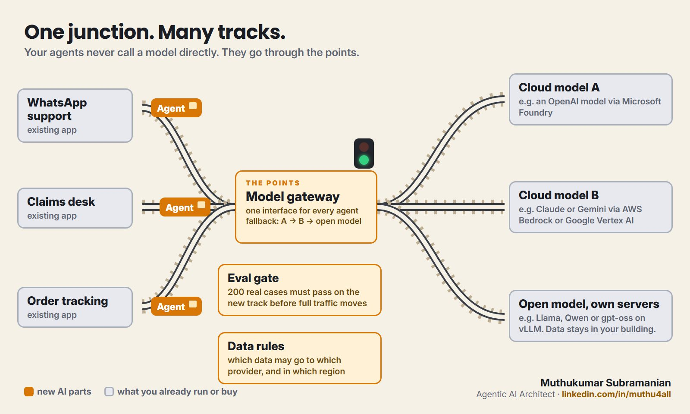
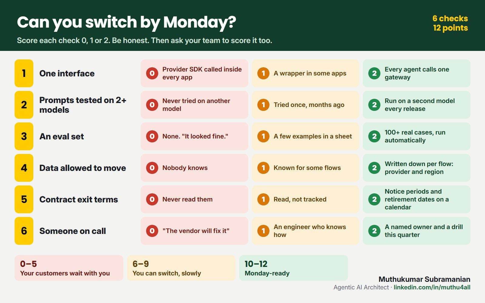
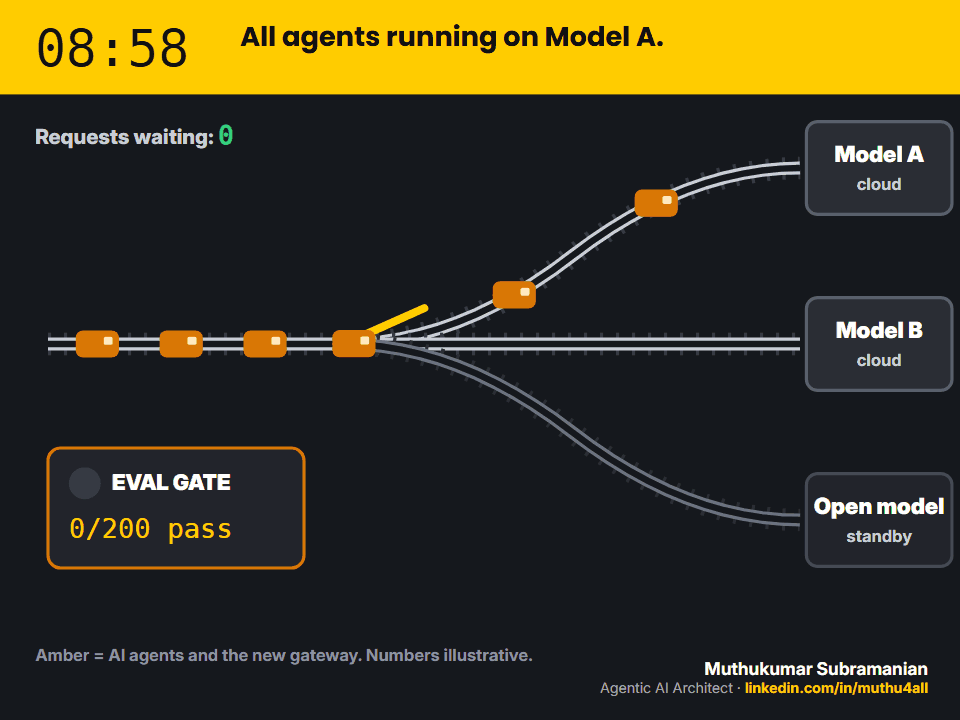

Monday, 9 AM. Your Model Provider Is Down. Where Do Your AI Agents Go?
By Muthukumar Subramanian · Agentic AI Architect

Monday, 9:00 AM. Priya runs customer support for a home-appliance service company in Chennai. Her AI agents answer about 3,000 WhatsApp messages a day, in Tamil and English: "When is the technician coming?", "My fridge is still not cooling."
At 9:00, every agent starts returning the same thing: an error. The model provider they all call is down.
By 9:20 there are 1,800 customers waiting. Her twelve human agents are typing as fast as they can. Someone asks the obvious question: "Can't we just switch to another model?"
The engineer's answer is honest. "Every prompt was written for this one. We've never tested anything else. I wouldn't put it in front of customers without checking." (The company, Priya and every number here are illustrative.)
The provider came back at 11:40. Nobody lost money. They lost a morning, and a few hundred customers' patience.
The architecture today
This isn't paranoia. On 11 December 2024, OpenAI's API, ChatGPT and Sora were unavailable for hours. OpenAI's own write-up blamed a new telemetry service that overloaded its Kubernetes control plane. Every large provider has had a bad day, and none of them is the villain here. Outages are what happens when you run anything at scale.
But look at how most companies wire their agents:
→ Each app calls one provider's SDK directly, with that provider's key baked in.
→ The prompts, the tool-calling format and the output parsing are all tuned to one model.
→ There's no second route. "Fallback" means a person on the phone with the vendor.
Lock-in isn't a contract clause. It's 400 prompts written for one model.
And outages are the dramatic risk, not the only one. Three quieter ones:
→ Retirement. In April 2025, OpenAI gave developers three months' notice that gpt-4.5-preview would leave its API on 14 July 2025. Model retirements are normal and announced. They still mean someone re-tests every prompt.
→ Price changes. When a new model or a new pricing tier lands, your costs change overnight, up or down.
→ Data rules. India's DPDP Act lets personal data go abroad unless the government restricts a country. But sector rules sit on top: RBI's 2018 direction says payment system data must be stored only in India. Your support agent and your payments agent may not be allowed on the same track.
On Day 23 I wrote about routing work to the cheapest model that can do it. Today it's the same switch, used for survival.
Where AI plugs in now: one junction
Think of a railway junction. The trains are your agents. The tracks are model providers. The points, the switch that sends a train left or right, are a model gateway.
The low-risk first step is boring, and that's the point:
→ Put every agent behind one gateway. All calls go through the points, never straight to a provider.
→ Write down a fallback order: Model A, then Model B, then an open model on your own servers.
→ Start with low-risk flows: order status, FAQs, summaries. Not refunds.

Here's the contrarian bit. A fallback you've never tested is a hope, not a plan. Most "multi-model" setups I see are one model plus a config file nobody has run. Switching models is a one-line change. Switching models and knowing the answers are still right is the actual work.
Where it's heading with agents: switch, check, then move
In two or three years, I expect the switch to be run partly by agents too. Roughly like this:
→ A monitoring agent watches error rates and response times per provider, every minute.
→ When a track goes red, it moves traffic to a standby track that has already passed checks. It doesn't just jump.
→ An eval gate runs a set of real past conversations, with known good answers, against the new model. Only when they pass does full traffic move. Small slice first, then everything.
→ Data rules travel with each request: this flow may use any cloud region; this one must stay on your own servers in India.
→ A person is told what happened, why, and how to switch back.
Is your company ready? Score it
Six checks, 0 to 2 points each. Do it alone, then ask your team to do it. The gap between the two scores is its own finding.

Watch the switch

Notice what the gate costs you: about two minutes. Notice what it saves: sending 1,800 customers a model whose Tamil answers you've never read.
Pros
→ An outage becomes a slower morning, not a lost one
→ You can negotiate with vendors, because leaving is real
→ You can keep sensitive flows on your own servers and send the rest to the cloud
Cons
→ Every extra track needs its own tests, keys, contracts and monitoring
→ The lowest common denominator is a trap. Wrap every model the same way and you lose what makes each one good
→ A standby open model means GPUs, patching and someone who knows how to run them
The hard parts
Prompts don't port. The same prompt can give a different tone, a different format or a different tool call on another model. Tool-calling formats and context limits differ too. Your gateway hides the plumbing, not the behaviour.
Evals are the expensive bit. Writing 200 real cases with "this is a good answer" takes your support leads' time, not just engineers'. Without them, the eval gate is theatre.
Quality drops quietly. The backup model might be fine in English and weaker in Tamil. You'll only know if your test set has Tamil in it.
Standby costs money even when nothing breaks. Keeping a second track warm, and an open model on your own servers, is insurance. Someone will ask why you're paying for it in a good month.
And contracts. Notice periods, data-processing terms and retirement dates sit in three different documents owned by three different teams.
This is where a newer role fits. An AgentOps Engineer runs agents in production the way an SRE runs services: dashboards, on-call, switch drills. Some companies call it something else, and the titles are still settling. The job is real: own the junction, and run a "Model A is down" drill every quarter, before a real Monday does it for you.
The opportunity
Who pays: every company whose customers now talk to an AI agent first. Banks, insurers, e-commerce, hospitals, telecom, and the IT services firms that run these systems for them.
What it creates:
→ Model-neutral gateways with eval gates and data rules built in, not just a proxy
→ Migration services: "move your agents from model A to model B in two weeks, with test results to prove nothing broke"
→ Switch drills as a service: a fire drill for your AI, with a report for the board
→ Open models hosted in Indian data centres for flows that can't leave the country
A forward deployed engineer (FDE), an engineer who works inside the customer's team on their real systems, is how most of this gets sold: one week with the support team, 200 real cases written down, one tested second track.
Tools to try
LiteLLM (open source) or OpenRouter as the gateway, both with fallback lists across providers · AWS Bedrock (Claude, Llama, Mistral, OpenAI's gpt-oss and more) · Microsoft Foundry, formerly Azure AI Foundry (OpenAI models, and Claude since late 2025) · Google Vertex AI Model Garden (Gemini and Claude) · vLLM or Ollama to run an open model on your own servers.
Your turn 👇
If your main model went down at 9 AM on Monday, could your agents switch by 9:15? Yes or no.
Tag the person who gets the call when the AI stops answering.
Day 33 of 50 · follow along. Tomorrow: Day 34 · A Customer Asked Nicely. The AI Agent Gave Away 80%.